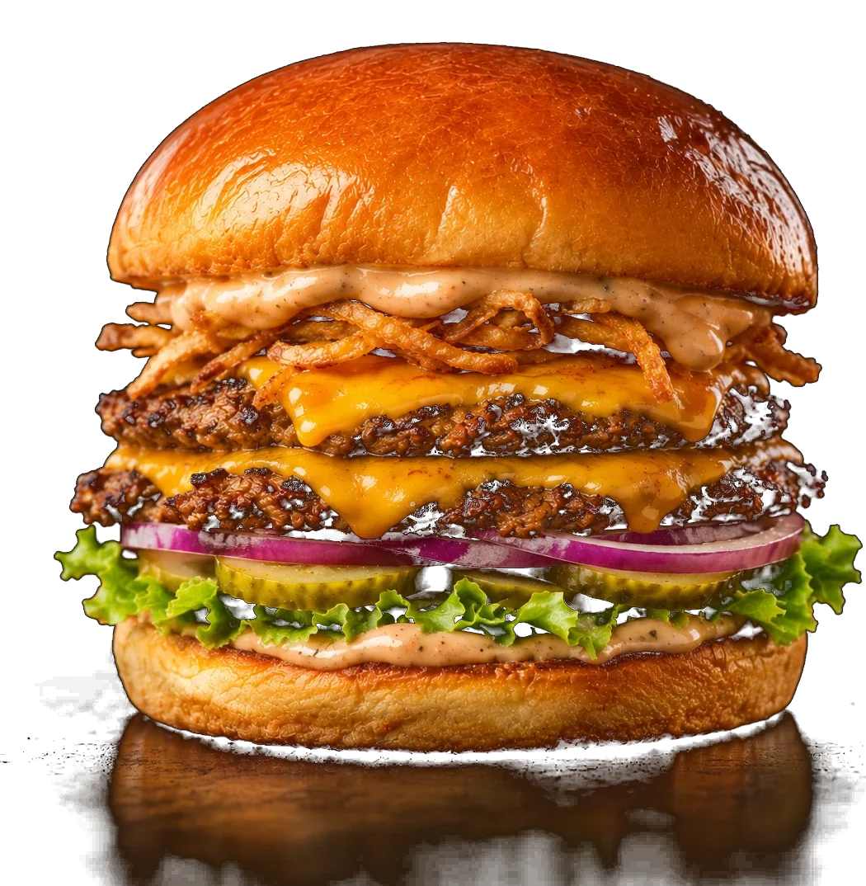
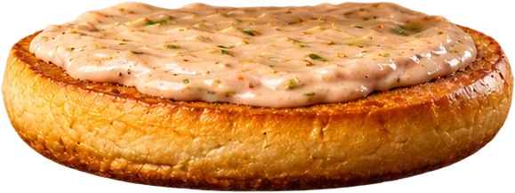
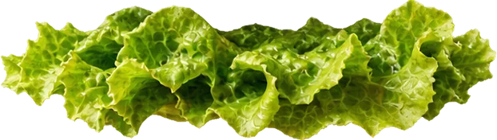
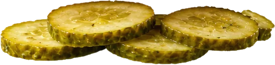
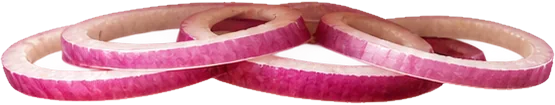
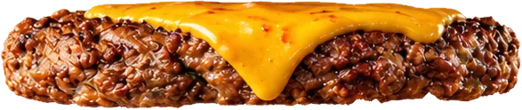
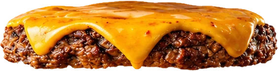
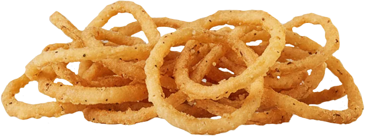
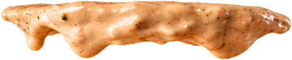
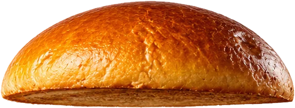

Assembly preview
Zen Smash
2 Wagyu Beef Blend, American Cheese, Fried Onions, Fancy Sauce & Pickles


Brioche Bottom BunToasted & spread with Fancy Sauce

LettuceCrisp, fresh green leaf

PicklesCrinkle-cut & tangy

Red OnionThin-sliced rings for crunch

Wagyu Beef BlendSeared, with melted American cheese

Wagyu Beef BlendSeared, with melted American cheese

Fried Onion RingsBeer-battered, fresh & deep-fried

Fancy SauceCreamy, flecked with herbs

Brioche Top BunGolden, glossy & lightly toasted
Independent redesign concept by Anderrz. Not affiliated with Iron Tap.